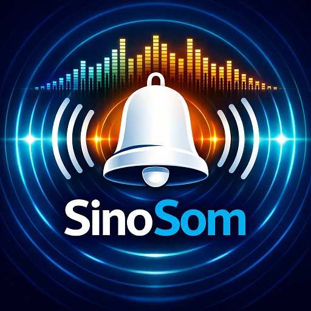
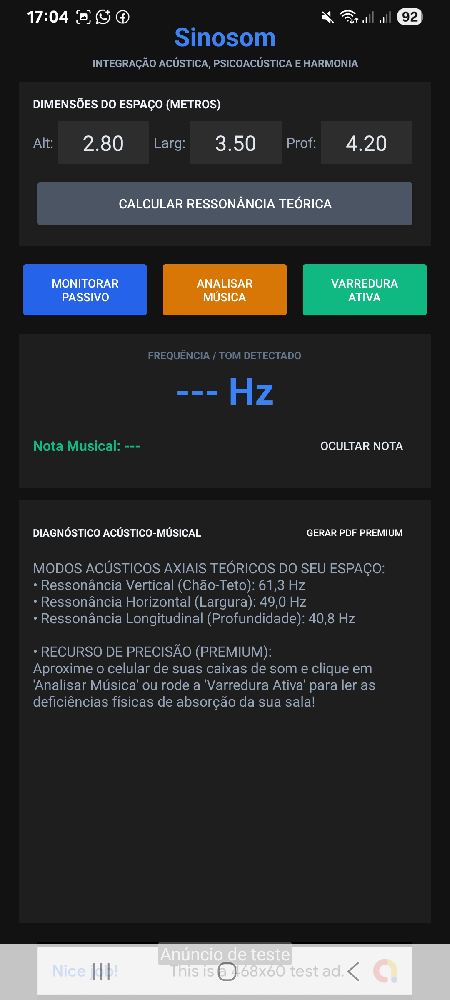
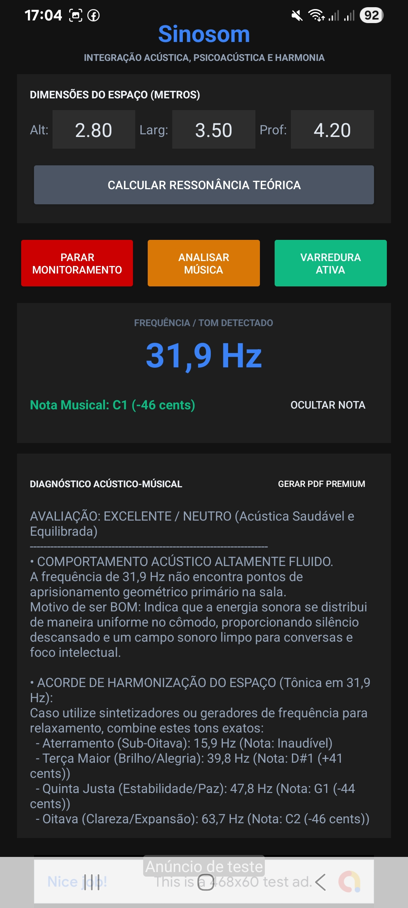

Mapeie as ressonâncias do seu ambiente, equilibre frentes de onda de forma psicoacústica e harmonize qualquer espaço.
Baixar Sinosom na Google PlayO som se comporta de forma mecânica em ambientes fechados. Paredes rígidas paralelas criam nós acústicos, gerando o acúmulo de frequências ressonantes que geram desconforto auditivo e interferências invisíveis.
O **Sinosom** foi criado para expor esses pontos de estagnação de energia sonora, entregando ao usuário diagnósticos simples e guias de harmonização rápidos para organizar seu espaço de forma psicoacusticamente agradável.
Em Residências: Remove o estresse oculto de som reverberante em salas de estar, quartos e escritórios, criando uma atmosfera verdadeiramente confortável para descanso.
Para Lojistas (Neuromarketing): Garante que a sua playlist comercial não dispute espaço com as imperfeições físicas das suas paredes. Menos ruído significa clientes confortáveis e comprando por mais tempo.
Escritórios e Consultórios: Melhora a privacidade das salas de atendimento, reduz a fadiga acústica e potencializa a clareza das reuniões.
A partir de cálculos físicos fundamentados, o app revela os pontos teóricos primários de aprisionamento de graves das suas paredes.
Meça a frequência dominante do ambiente em Hz através do microfone com detalhamento de notas musicais e cents de desvio.
Emita ondas de varredura acústica com suas caixas de som para mapear precisamente as deficiências físicas da estrutura.
Gere relatórios acústicos detalhados em formato PDF para salvar, imprimir ou compartilhar com seu decorador ou arquiteto.
"Minha sala de estar parecia pesada e o som da TV ficava sempre confuso e cansativo de ouvir. Com o Sinosom eu descobri que as minhas paredes paralelas estavam gerando um acúmulo em 125 Hz. Mudei a estante de lugar e adicionei plantas nos cantos como o app sugeriu. A diferença na paz do ambiente é incrível."
"Percebi que os clientes saíam rapidamente da minha loja de roupas. O analisador de música do Sinosom me mostrou que a playlist que eu tocava estava gerando conflito físico com a altura do teto de gesso, criando uma sensação abafada irritante. Troquei a tônica das canções e o tempo de permanência na loja aumentou."
"Sou arquiteta de interiores e o Sinosom virou minha ferramenta de cabeceira. Gerar os relatórios em PDF do ambiente em tempo real e entregar na mão do cliente antes de escolhermos os tecidos de cortinas e tapetes traz um nível de profissionalismo maravilhoso para o meu trabalho de consultoria."

